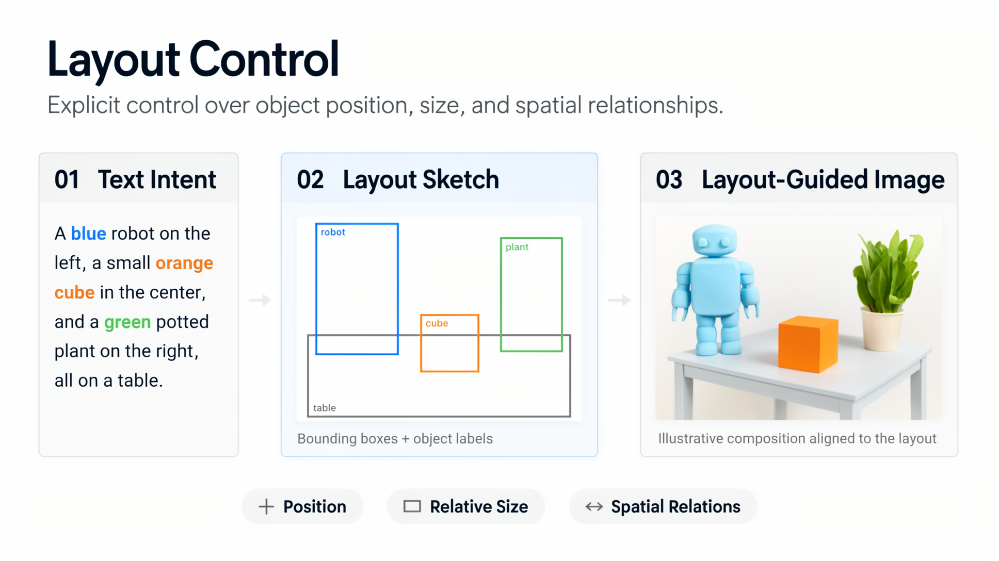
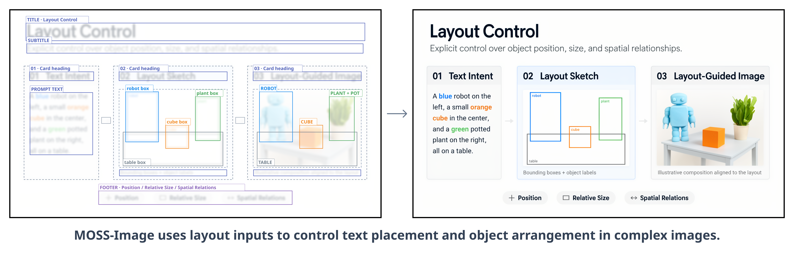
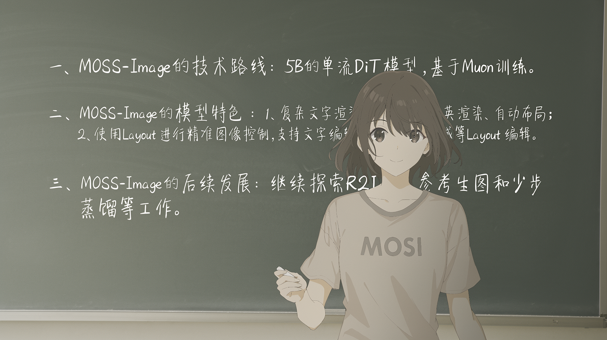

The short version: MOSS-Image targets the image-generation jobs that are hardest to deliver reliably: posters, infographics, comics, UI mockups, and teaching materials that combine dense text with objects that must appear in specific places. Its 5B single-stream DiT is trained from scratch, supports prompts up to about 4K tokens, renders long Chinese and English text, and accepts editable JSON Layout specifications. The technical report shows state-of-the-art performance among open-weight models on long-form text rendering and a strong layout preference score under shared enhanced prompts.
5B single-stream DiT
A from-scratch image-generation backbone trained with a Muon–AdamW recipe and a shared conditioning path for natural language and structured Layout.
Long-form text
Preserves line breaks and paragraph structure across Chinese and English, making dense captions and information graphics more usable.
Editable composition
JSON describes the canvas, text, objects, and bounding boxes so position, size, and spatial relations can be edited before generation.
Open ecosystem
Base and SFT checkpoints are released under Apache-2.0 with Diffusers, Gradio, ComfyUI, LoRA, and full fine-tuning paths.
Why “can draw” is not enough
A normal text-to-image prompt only needs a rough understanding of what belongs in a scene. A deliverable poster also needs spelling, reading order, line breaks, and hierarchy to remain stable. An infographic needs objects to stay inside the requested regions. These requirements become harder as text gets longer and the composition becomes denser.
MOSS-Image offers two complementary inputs. Natural-language prompts are convenient for exploration; structured Layout inputs are designed for reproducible, editable compositions. Both use the same text-conditioning route, so a creator can move from a high-level idea to explicit placement without switching models.


Technical route: a 5B DiT with intent-aware prompt enhancement
The technical report describes a 5B single-stream Diffusion Transformer trained from scratch. It uses a Qwen3.5-9B text encoder and a FLUX.2 VAE, with about 3B training images and supervision for captions, rendered text, and structured bounding boxes. Training progressively reaches 1024² resolution and 4096-token context, so longer layout constraints can survive as image detail grows.
On top of the backbone, the optional agentic Prompt Enhancement (PE) module expands a short request such as “make an opening poster for a coffee shop” into an executable content and layout specification. It can plan text, hierarchy, color palette, element descriptions, bboxes, anchors, and must_not constraints, and route the request to poster, infographic, or UI-like structures. PE is an external planning module; the local backbone can still consume ordinary prompts or JSON Layout directly.

Evaluation: the advantage is concentrated in text and layout
Long text: LLTB
LongLongTextBench (LLTB) contains 120 Chinese and 120 English tasks, with an average target length of about 1,339.8 characters. MOSS-Image reaches a Mean-6 score of 96.3, the highest reported result among open-weight models; its longest English and Chinese scores are 97.1 and 92.4. LLTB measures text coverage and rendering quality, not OCR edit distance or factual accuracy.
Layout: 7Bench
On the shared JSON/Layout tasks, MOSS-Image obtains detection mIoU of 0.8786, Layout AUC of 0.7031, and overall layout mIoU of 0.6788. The table reports the two primary layout metrics:
| Model | mIoUdet ↑ | Layout AUC ↑ | Evaluation role |
|---|---|---|---|
| MOSS-Image | 0.8786 | 0.7031 | Open-weight generator |
| Ideogram 4 | 0.4449 | 0.2046 | Closed generation system |
| GPT Image 2 | 0.3042 | 0.1554 | Closed generation system |
| Nano Banana Pro | 0.3296 | 0.1628 | Closed generation system |
| Qwen Image 3 Pro | 0.3148 | 0.1758 | Generation system |
| Seedream 5 Pro | 0.3273 | 0.1794 | Closed generation system |
End-to-end preference: RealLayoutArena
RealLayoutArena (RLA) lets each system use its own prompt enhancement and generation pipeline before aggregating blind human preferences into Elo. MOSS-Image scores 1698.70 (95% CI 1655.96–1741.43), ranking second. GPT Image 2 scores 1844.35, Seedream 5 Pro 1661.16, Qwen Image 3 Pro + PE 1614.84, and Nano Banana Pro 1590.19.
Under a shared enhanced natural-language prompt, the MOSS-Image backbone scores 1807.34, ahead of ERNIE Image at 1748.51 and SenseNova-U1 at 1689.23. These results answer different questions: the shared-prompt experiment isolates the generator, while the end-to-end ranking includes each system’s planning and product pipeline.
How does it compare with similar models?
The comparison below combines capability and delivery model. Closed systems may still provide stronger end-to-end aesthetics or product integration; MOSS-Image is differentiated by dense text, explicit layout control, and open deployment. Scores come from different protocols and should not be combined into one universal ranking.
| Model / family | Text and layout focus | Openness and adaptation | When it is the better choice |
|---|---|---|---|
| MOSS-Image | Long Chinese/English text, JSON Layout, bboxes, and spatial relations; LLTB 96.3 and leading 7Bench results | Open weights; Base/SFT, LoRA/full fine-tuning, Diffusers/ComfyUI | Local deployment, reproducible compositions, or training on private data |
| GPT Image 2 | RLA end-to-end Elo 1844.35, first in that system comparison | Closed hosted service; no downloadable weights for local fine-tuning | Hosted API access and a polished end-to-end product experience |
| Ideogram 4 | A common closed reference for design and text generation; lower 7Bench layout scores in the report | Closed service | A mature online design workflow without managing weights |
| Seedream 5 Pro | RLA Elo 1661.16; general visual creation and product workflows | Closed service | Direct access to a commercial image-generation service |
| Qwen Image 3 Pro | RLA Elo 1614.84 with PE; a reference generation system in the same study | Used through a product/API; openness depends on the version | Image generation inside an existing Qwen workflow |
| Qwen Image 2512 | LLTB Mean-6 of 64.9 in the report; useful open-model text-rendering baseline | Open research ecosystem | Open-model comparison or an existing Qwen-based experiment |
There are clear limits: the current MOSS-Image backbone is text-to-image. It does not directly accept reference images or provide native image editing, and Prompt Enhancement relies on an external language model whose planning quality affects the final specification. Its strength is an open, inspectable, fine-tunable path where text and placement become explicit inputs.
From Base to a usable system
The repository releases MOSS-Image-Base and MOSS-Image-SFT, which is fine-tuned on curated data. Base is the starting point for continued pretraining, domain SFT, or LoRA; SFT is the easier entry for more stable text grouping and whiteboard-like layouts. Diffusers, Gradio, and ComfyUI are supported, with community integrations for SGLang, vLLM-Omni, and KohakuMossTrainer.
from diffusers import DiffusionPipeline
import torch
pipe = DiffusionPipeline.from_pretrained(
"OpenMOSS-Team/MOSS-Image-Base",
custom_pipeline="pipeline_moss_image",
trust_remote_code=True,
torch_dtype={"default": torch.bfloat16, "vae": torch.float32},
).to("cuda")
image = pipe(
"A minimalist travel poster with EXPLORE at the top, cream background, blue mountains",
height=1024, width=1024, num_inference_steps=50, guidance_scale=3.0,
).images[0]
image.save("poster.png")For precise composition, pass a JSON object containing summary, items, and bbox as the prompt. For a custom brand or domain, choose SFT or LoRA training after the first local generation works.